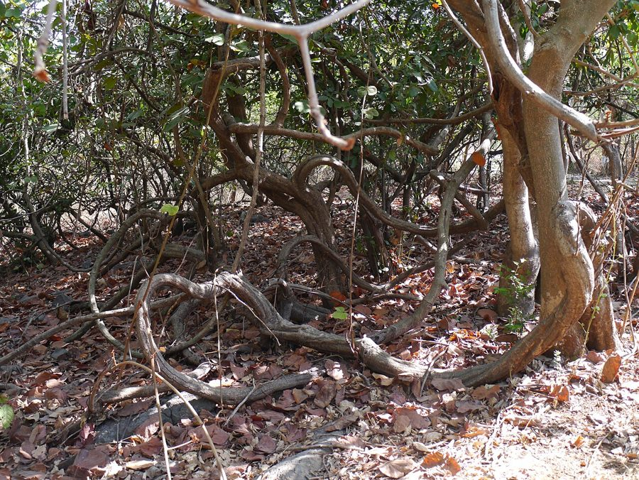

मालू बेलMalu Creeper
Phanera vahlii · Fabaceae · FLR-0358

- Scientific name वैज्ञानिक नाम
- Phanera vahlii (Wight & Arn.) Benth.
- Family कुल
- Fabaceae
- Hindi हिंदी
- मालू बेल
- Local names स्थानीय नाम
- malu bel, malu creeper, maljhan, jallur
- Status here यहाँ की स्थिति
- native
- Movement आवागमन
- Resident, here all year
- Known from कहाँ दर्ज
- Others have published records from the wider Awadh–Purvanchal plain, none yet from Basti–Ayodhya अवध–पूर्वांचल से दूसरों के प्रकाशित अभिलेख, बस्ती–अयोध्या से अभी नहीं
- IUCN IUCN
- not evaluated
- Review समीक्षा
- not yet reviewed
When to look कब देखें
Present all year. साल भर मौजूद।
Uses and possibilities उपयोग और संभावनाएँ
“Traditional medicine” means a documented traditional use, not a claim that it works. Nothing on this page is medical advice.
Drawn from the documented uses in the profile below, where each is labelled traditional, current or a research lead. All uses →
Tell it apart from इनसे अलग पहचानें
मालू बेल / Malu Creeper
Phanera vahlii (Wight & Arn.) Benth. — Fabaceae
मालू बेल — यह भारत के जंगलों में पाई जाने वाली सबसे विशालकाय काष्ठीय लता (लता-वृक्ष) है। इसके तने मोटे रस्से जैसे होते हैं जो ऊंचे-ऊंचे पेड़ों की चोटियों तक चढ़ जाते हैं। इसके गोल पत्ते बहुत बड़े, बीच से दो हिस्सों में बंटे होते हैं, जिनसे ग्रामीण पत्तल, दोने और बरसाती छतरियां बनाते रहे हैं। गर्मियों में इस पर सफेद-पीले फूलों के गुच्छे आते हैं और सर्दियों में लकड़ी जैसी भारी फलियां लगती हैं जिनके भुने हुए बीज खाए जाते हैं।
Quick Identification त्वरित पहचान
| Feature | Description |
|---|---|
| Habit | Enormous woody climber with deeply fluted cable-like stems and circinate tendrils |
| Leaves | Very large, suborbicular, deeply cordate, cleft into two obtuse lobes, densely downy beneath |
| Inflorescence | Dense terminal long-peduncled corymbs or corymbose racemes |
| Flowers | Showy white flowers turning cream or buff-yellow, with densely hairy petals |
| Fruit | Massive flat woody pendulous pod covered in dense rusty velvety tomentum |
| Tendrils | Strong revolute woody tendrils produced in pairs at branch tips |
Field tip: Look in dense sub-Himalayan forest tracts for an enormous thick-stemmed canopy climber with huge twin-lobed leaves and massive woody brown velvety pods hanging high in the trees.
हिंदी: जंगल के सबसे ऊंचे पेड़ों पर चढ़ने वाली यह भारी बेल अपने बड़े दोमुंहे पत्तों और मोटे रस्से जैसे तनों से तुरंत पहचानी जाती है। इसकी फलियां बहुत बड़ी, चपटी और मखमली भूरी होती हैं।
Morphology आकारिकी
| Measurement | Range |
|---|---|
| Seeds per pod | 8–12 (Hooker 1879) |
Phanera vahlii is an immense woody climber that reaches the tops of the highest forest trees, producing massive fluted cable-like stems. The branchlets are densely pubescent, ending in pairs of strong circinate revolute tendrils. The leaves are rigidly subcoriaceous, deeply cordate at the base, cleft down about one-third of their length into two obtuse lobes, and persistently downy or velvety beneath.
The flowers are borne in long-peduncled terminal corymbs or corymbose racemes with downy axes. The calyx tube is cylindrical with a two-lobed rusty-tomentose limb. The petals are obovate, shortly clawed, white turning creamy-yellow, and densely pilose on the outer surface. The fertile stamens are three. The pod is pendulous, woody, flat, and clothed in dense rusty-coloured velvety down, splitting open elastically with a loud crack when fully mature to scatter its flat brown seeds.
हिंदी: यह लता जंगल के पेड़ों को अपनी मजबूत पकड़ में जकड़ लेती है। इसके पत्ते ऊपर से गहरे हरे और नीचे से रोएंदार होते हैं। फलियां बहुत सख्त और लकड़ी जैसी होती हैं जिनमें आठ से बारह बड़े चपटे बीज होते हैं।
Behaviour & Ecology व्यवहार और पारिस्थितिकी
The malu creeper is the largest climbing plant of the Indian subcontinent, capable of climbing over the tallest sal and terminalia canopies. Its strong woody tendrils coil tightly around canopy branches, anchoring the liana against fierce monsoon squalls.
The massive foliage forms a dense layer in the upper canopy, casting deep shade that suppresses understorey vegetation while sheltering nesting birds and arboreal mammals. The flowers open in the warmth of early summer, exhaling a sweet fragrance that attracts daytime bees and crepuscular moths. Dehiscence of the ripe woody pod occurs during hot spring afternoons: the thick valves twist violently apart with a sharp audible report, catapulting the seeds several meters away from the supporting tree.
हिंदी: यह बेल पेड़ों के ऊपर छाकर अपनी अलग ही छतरी बना लेती है। इसके फूल गर्मियों में खिलते हैं और मधुमक्खियों को आकर्षित करते हैं। जब इसकी सूखी फलियां गर्मी में धूप से फटती हैं, तो बंदूक चलने जैसी आवाज होती है और बीज दूर छिटक जाते हैं।
Life Cycle / Phenology जीवन चक्र
Foliage remains largely evergreen, though older leaves are partially shed during the late dry season. New leaves emerge with soft reddish-brown pubescence in early spring.
Flowering takes place from April through June, producing showy terminal trusses of white flowers that gradually turn buff as they age. The woody pods develop slowly through the monsoon and winter months, attaining their enormous size by December. Ripening and explosive seed ejection occur in March, April, and May before the monsoon.
हिंदी: बैसाख और जेठ में इस पर सफेद-पीले फूलों की बहार आती है। फलियां बरसात भर बढ़ती हैं और जाड़े में पकती हैं। अगली गर्मियों में चटककर बीज बिखेर देती हैं।
Associated Species / Interactions सहजीवी प्रजातियाँ
Phanera vahlii relies upon large structural host trees such as Sal (Shorea robusta) and Arjun (Terminalia arjuna) for physical support, sometimes smothering weakened trees in unmanaged tracts.
Its extensive aerial cable network provides vital canopy pathways for langurs and small mammals. The flowers provide nectar to honeybees and nymphalid butterflies, while the large tough leaves are utilized by tailoring birds and nesting insects for shelter.
हिंदी: यह साल और अर्जुन जैसे भारी पेड़ों के सहारे ऊपर चढ़ती है। इसके फैले हुए तने बंदरों और गिलहरियों के लिए एक पेड़ से दूसरे पेड़ पर जाने का पुल बनते हैं।
Pests and Diseases कीट और रोग
In natural forest stands, the climber itself is often considered a silvicultural pest because its excessive weight and dense canopy foliage can deform or strangle commercially valuable sal timber trees. Foresters regularly cut the woody stems in managed compartments.
Foliage is browsed by leaf-cutter bees and larval insects, and old woody stems can be invaded by wood-decaying polypore fungi. The hard seeds are frequently attacked by bruchid beetle borers before pod dehiscence.
हिंदी: वानिकी की दृष्टि से इसे साल के पेड़ों को दबाने वाली बेल माना जाता है, इसलिए वन विभाग कभी-कभी इसे काटता है। फलियों के भीतर घुन जैसे कीड़े बीजों को नुकसान पहुंचा सकते हैं।
Agricultural / Human Relevance कृषि प्रासंगिकता
Phanera vahlii has immense ethnobotanical value in the rural economy of northern India. Its huge, tough, pliable leaves are universally stitched into disposable dining plates (pattal) and food bowls (dona), and historically layered with bamboo to create waterproof umbrellas and rain capes.
The inner bark yields a remarkably strong, durable bast fibre used locally for making heavy ropes, suspension bridges, and cattle halters. The large flat seeds are rich in starch and oil, traditionally eaten roasted or boiled as a forest food. Traditional medicine records the use of root decoctions for debility; this is a record of traditional use, not medical advice.
Traditional: Leaves stitched into plates (pattals); bark peeled for durable rope making; seeds roasted for food.
Today: Commercial non-timber forest produce gathered by forest-fringe communities for rural markets.
Research direction (a lead, not a result): Study of biodegradable leaf composites and antimicrobial leaf surface waxes.
हिंदी: इसके विशाल पत्तों से शादी-ब्याह के लिए पत्तल और दोने बनाए जाते हैं। इसकी छाल से बहुत मजबूत रस्सी बटी जाती है जो कुओं और छप्परों में काम आती है। इसके बीजों को भूनकर खाया जाता है जो खाने में स्वादिष्ट होते हैं।
Expected Locally स्थानीय रूप से अपेक्षित
Not a field record. Written from published accounts for eastern Uttar Pradesh. No confirmed local sighting yet — if you have seen it, that is what the atlas needs.
अभी तक स्थानीय पुष्टि नहीं। यह विवरण प्रकाशित स्रोतों से है, किसी अवलोकन से नहीं।
In eastern Uttar Pradesh, Phanera vahlii should be sought in the sub-Himalayan forest reserves, ravine woodland belts, and protected moist sal groves bordering northern Awadh and Purvanchal. GBIF holds published records from the wider Awadh–Purvanchal plain, none yet from Basti–Ayodhya. A confirmed local record requires a dated photograph showing diagnostic floral or vegetative features submitted through the project portal.
हिंदी: बस्ती और आसपास के तराई वाले जंगलों और कछारों में जहां पुराने बड़े पेड़ हैं, वहां इस विशाल बेल के मिलने की पूरी संभावना है। यदि इसके बड़े दोमुंहे पत्ते या फलियां दिखें तो फोटो भेजें।
Distribution वितरण
Global range: Native to the Indian subcontinent, occurring across India, Nepal, Bhutan, and Bangladesh.
In India: Abundant in the outer Himalayas from the Chenab eastwards to Assam, ascending into the Siwalik hills, and widespread in central, western, and eastern peninsular forests.
In Uttar Pradesh: Recorded in the Siwaliks, Dehra Dun, Rohilkhand, northern Oudh, and the Vindhyan hills.
In Basti district / eastern UP: Documented in regional forestry floras for the Upper Gangetic plain; expected in protected sal forest blocks along the northern perimeter.
हिंदी: यह पूरे हिमालय की तलहटी और मध्य भारत के जंगलों में खूब पाई जाती है। उत्तर प्रदेश के तराई के जंगलों में यह बहुत आम है।
Research Questions शोध प्रश्न
- What is the impact of heavy commercial leaf harvesting for pattal making on the flowering and seed production of wild Phanera vahlii? / क्या पत्तल बनाने के लिए ज्यादा पत्ते तोड़ने से इसके फल कम बनते हैं?
- How far are the flat seeds propelled during the explosive dehiscence of its woody pods on hot afternoons?
- What tensile strength and decay resistance do ropes crafted from its bast fibres exhibit compared to synthetic cordage?
- How does the presence of massive malu lianas influence structural canopy microclimate and humidity in moist deciduous forests?
- What traditional ecological knowledge governs community leaf harvesting seasons among local tribal harvesters? / गांव के लोग पत्ते तोड़ने के क्या नियम और समय तय करते हैं?
हिंदी: धूप में इसकी फलियां कितनी दूर तक बीज फेंकती हैं? इसकी छाल से बनी रस्सी में कितनी मजबूती होती है, इस पर रोचक अध्ययन किया जा सकता है।
Similar Species मिलती-जुलती प्रजातियाँ
| Species | How to tell apart | हिंदी | |
|---|---|---|---|
| [[kachnar | Bauhinia variegata]] | Erect medium tree with smaller cleft leaves and fragrant pink, purple, or white flowers | कचनार |
| [[giloy | Tinospora cordifolia]] | Slender succulent climber with heart-shaped simple leaves and thin aerial roots | गिलोय |
Field rule: Gigantic climbing woody habit, massive deeply cleft leaves, paired tendrils, and huge rusty-velvety flat pods distinguish Phanera vahlii from erect Bauhinia trees and herbaceous climbers.
हिंदी: कचनार एक स्वतंत्र पेड़ है, जबकि मालू एक बहुत बड़ी बेल है जो दूसरे पेड़ों पर चढ़ती है और इसके पत्ते व फलियां कचनार से कई गुना बड़े होते हैं।
Taxonomy & Classification वर्गीकरण
Original description. Described by Robert Wight and G. A. Walker-Arnott in 1834 as Bauhinia vahlii in Prodromus Florae Peninsulae Indiae Orientalis, Vol. 1, p. 297. Transferred to Phanera by George Bentham in 1852 in Miquel, Plantae Junghuhnianae, p. 263.
Subspecies. Monotypic — no subspecies are currently recognised.
Family and order placement. Placed in the family Fabaceae (subfamily Cercidoideae), order Fabales.
Phylogenetic notes. Phanera is recognised as distinct from Bauhinia sensu stricto on the basis of climbing habit, paired circinate tendrils, and floral morphology.
IUCN status rationale. Not evaluated by the IUCN Red List (not_evaluated). The species remains widespread, vigorous, and abundant across Indian forest tracts.
हिंदी: पहले इसे बॉहिनिया वंश में रखा गया था, लेकिन इसके चढ़ने वाले स्वभाव और टेंड्रिल के कारण वैज्ञानिकों ने इसे फनेरा वंश में अलग मान्यता दी।
Photo Gallery फोटो गैलरी
No photos yet — add field photos to media/species/malu_creeper/ and run node scripts/sync_photos.js.
Photos needed आवश्यक फोटो
- [ ] Massive woody rope-like stem climbing up a canopy tree (पेड़ पर चढ़ा मोटा तना)
- [ ] Giant twin-lobed leaf showing venation and size (बड़ा दोमुंहा पत्ता)
- [ ] Terminal corymb of white to buff flowers (फूलों का गुच्छा)
- [ ] Enormous woody velvety pod hanging from branch (लटकती हुई बड़ी मखमली फली)
References संदर्भ
- Wight, R. & Arnott, G. A. W. (1834). Prodromus Florae Peninsulae Indiae Orientalis, Vol. 1, p. 297 (as Bauhinia vahlii).
- Bentham, G. (1852). In Miquel, F. A. W., Plantae Junghuhnianae, p. 263.
- Hooker, J. D. (1879). The Flora of British India, Vol. 2. L. Reeve & Co., London (as Bauhinia vahlii).
- Duthie, J. F. (1903). Flora of the Upper Gangetic Plain, and of the Adjacent Siwalik and Sub-Himalayan Tracts, Vol. 1. Office of the Superintendent of Government Printing, Calcutta.
- Brandis, D. (1906). Indian Trees: An Account of Trees, Shrubs, Woody Climbers, Bamboos and Palms Included in the Indian Empire. Archibald Constable & Co., London.
- GBIF Occurrence Data — Phanera vahlii, India (2025).
Source file: species/flora/climbers/malu_creeper.md